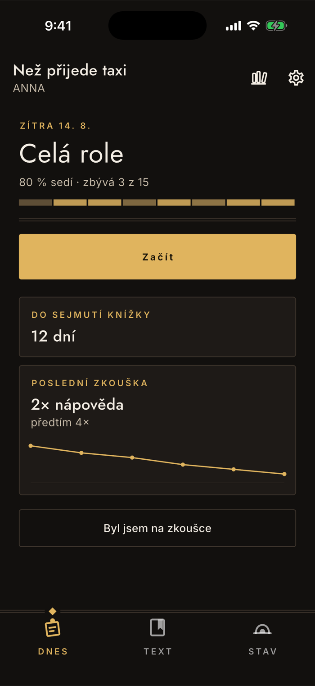
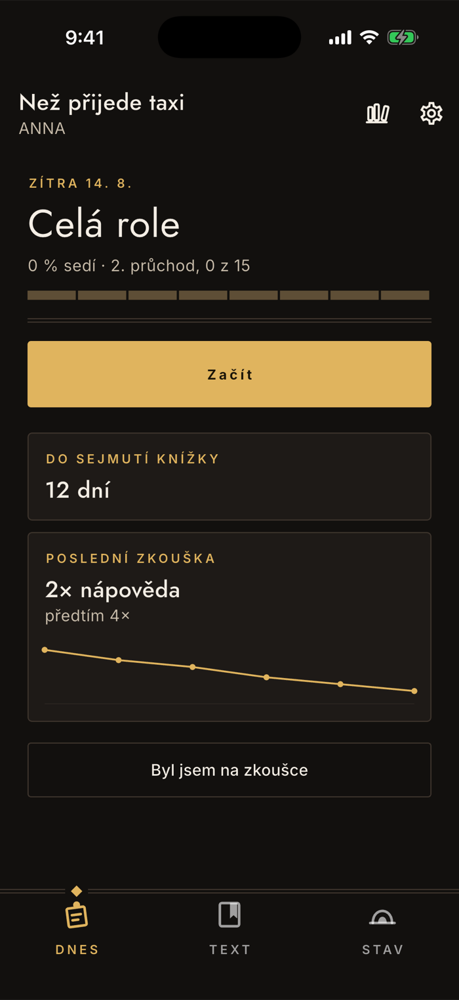
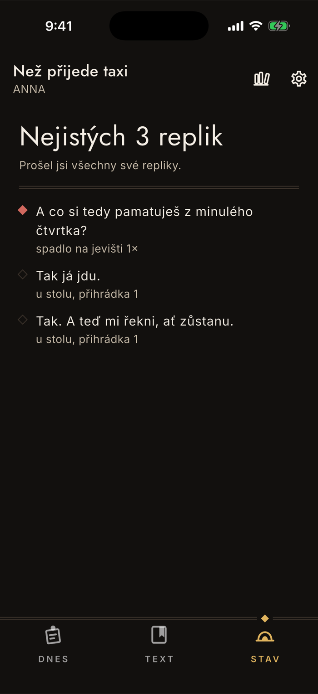

Učení
Kolik už umíš
Appka neukazuje body ani série, ukazuje skutečné veličiny: kolik replik sedí, kolikátý průchod rolí běží a kolik nápověd jsi potřeboval na poslední zkoušce. Tahle stránka vysvětluje, co ta čísla znamenají — a hlavně, z čeho se počítají.
Procento
Vztahuje se k tomu, co se zkouší
Tohle je nejdůležitější věta na stránce. Když máš nastavené jedno dějství, procento i počty se počítají jen z něj, ne z celé role. Nadpis nad procentem proto vždycky říká, o jaký rozsah jde.
Co znamená „sedí"
Replika ve čtvrté přihrádce z pěti, u které jsi ani jednou nespadl na jevišti. Jevištní pád ji mezi sedící nepustí, ani když ji u stolu dáváš spolehlivě.
Škrty se nepočítají
Škrtnutá replika ze jmenovatele vypadne. Po škrtech se tedy procento může zvednout bez jediného drilu — a je to správně, protože ten text už nehraješ.
Zaokrouhluje se dolů
Devětadevadesát procent zůstane devětadevadesát. Sto procent se nikdy nenapíše číslem — místo něj se objeví „celá role sedí".

Průchody
Dokud je procento na nule
Na začátku by procento stálo dlouho na nule a nic by neříkalo. Místo něj se proto ukazuje kolikátý průchod rolí běží — a ten se hýbe skoro po každé odpovědi.
Co je průchod
Průchod číslo k jsou repliky, které mají aspoň k-tou přihrádku. Vede se vždycky ten nejnižší nedokončený, takže „2. průchod, 0 z 15" znamená: první průchod máš celý, druhý začínáš.
Čtvrtý průchod je cíl
Práh „sedí" a čtvrtý průchod jsou totéž. Průchody tedy nejsou vedlejší číslo — vedou přesně tam, kde procento začne stoupat.
Když replika spadne, jde číslo dolů
Nevěděl shazuje o dvě přihrádky, takže i průchod se může vrátit. Není to trestání, je to poctivost — jinak by číslo lhalo.

Pruh postupu
Osm úseků podle místa ve scénáři
Pruh je rozdělený na osm dílů podle toho, jak jdou vaše repliky za sebou. Ukazuje tedy nejen kolik umíte, ale kde to drhne — jestli je díra na začátku, nebo až ve druhém dějství. U role kratší než osm replik má pruh tolik dílů, kolik je replik.
Barva jde plynule, ne skokem
Úsek se barví podle průměrné přihrádky, ne podle toho, kolik replik už „sedí". Kdyby se barvilo jen sedícími, pruh by po prvních pár večerech zůstal šedý a nedal by zpětnou vazbu — takhle se pohne hned.
Díra je světlé místo, ne prázdné
Nejnižší úsek není bílý ani chybějící, jen tmavší. Pruh se čte jako plocha s nestejnou hustotou, ne jako ukazatel nabíjení.
Stav
Fronta na zítřek
Záložka Stav je seznam replik, které si zaslouží pozornost — seřazený podle toho, co spadlo na jevišti, ne podle pořadí ve scénáři.
U každé je důvod
Appka napíše, proč tam replika je: kolikrát spadla na jevišti, že jsi nevěděl o nástupu, nebo v jaké přihrádce u stolu je. Kosočtverec vlevo odlišuje jevištní pád od selhané narážky.
Nedotčené se počítají zvlášť
Repliky, které jsi ještě ani neviděl, nejsou „nejisté" — jsou nezkoušené. Appka je proto uvádí odděleně, ať se ti fronta nezdá horší, než je.
Stav ukazuje celou roli
Na rozdíl od domovské obrazovky nerespektuje rozsah, a je to záměr: dril si zužuješ na to, co se zkouší zítra, ale přehled o roli chceš celý.

Nápovědy ze zkoušek
Vedle učení u stolu si appka umí vést i to, co se stalo na zkoušce: po každé zadáte, kolikrát jste potřebovali napovědět, a vznikne z toho křivka. Je to jediné číslo, které opravdu měří, jak jste na tom — dril si můžete odklikat, ale nápovědu na zkoušce si nevymyslíte.
Záznam ze zkoušek a tahle křivka patří do plné verze; import, čtečka a dril jsou zdarma navždy. Na snímcích výš je appka s plnou verzí, takže je karta s nápovědami vidět.
Se záznamem ze zkoušky souvisí i to, co appka umí s jevištním pádem: replika, u které jste na zkoušce potřebovali napovědět, se vrací dvakrát častěji a nepustí se mezi sedící, dokud ji nedáte znovu. Bez plné verze se dril počítá jen z toho, jak vám text jde u stolu — což na naučení stačí, jen o té jedné vrstvě navíc neví.
Žádné body, žádné série
Nikde v appce nenajdete odznaky, úrovně ani počty dní v řadě. Je to rozhodnutí, ne opomenutí: cílovka jsou dospělí pod tlakem, ne studenti jazykové appky, a jediný pokrok, který v šatně něco znamená, je ten, který jde předvést na zkoušce.
Jak dril funguje uvnitř, popisuje stránka Jak appka zkouší.
Nesedí vám některé z těch čísel?
contact@lukashula.cz